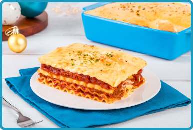

Cheesy Lasagna

Ingredients
- 6 pieces lasagna noodles
- 1 piece onion (large), chopped
- 4 cloves garlic, chopped
- 1/2 pound ground beef
- 500 grams spaghetti sauce
- 250 grams tomato sauce
- 1/2 teaspoon salt
- 1/4 teaspoon pepper
- 5 tablespoons butter
- 4 tablespoons all-purpose flour
- 2 1/2 cup milk
- 1 piece egg
- 1 block eden original 160g, grated
- 1 1/2 blocks eden melt sarap 160g, grated
Cooking Instructions
- Cook lasagna noodles according to instructions on packaging.
- In a large pan, over medium hear, saute chopped onions and garlic then add ground beef and cook until browned.
- Add spaghetti sauce, tomato sauce and simmer for 5 minutes until thickened, season with salt and pepper to taste.
- To prepare the white sauce, melt 5 tbsp. of butter over low heat in a separate pan. Once fully melted, add 4 tbsps of flour and stir until smooth.
- Add milk one cup at a time, whisk until smooth. Add grated, Eden Original and egg. Cook for 20 minutes to thicken, stirring constantly. Season with salt and pepper to taste.
- To assemble lasagna, spread 1 cup of the meat sauce on the bottom of a baking dish and top with lasagna noodles until the layer is full. Then spread 1 cup of white sauce on top and add 1 cup of grated Eden Melt Sarap. Repeat these steps for another 2 layers and cover baking with with foil.
- Bake in the pre-heated oven for 30-45 minutes or until cheese has melted. Serve and enjoy!